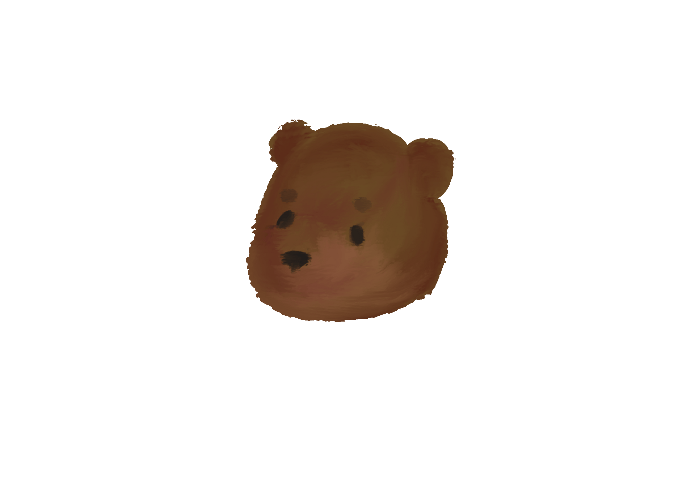
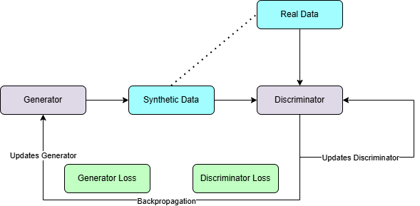

Welcome to SCOG
SCOG (Synthetic Control Generator) uses Conditional Tabular Generative Adversarial Networks to generate synthetic control arms for clinical trials.

Conditional Tabular Generative Adversarial Network (CTGAN)
A CTGAN is a machine learning model that learns the patterns and relationships in tabular data and generates synthetic rows that closely resemble the original data by maintaining its statistical properties. A CTGAN contains two main components: a generator and a discriminator.
Generator
- Takes random noise as initial input
- Generates synthetic data points that mimic the real data
- Learns to create and improve data with realistic distributions and correlations
Discriminator
- Distinguishes real data from synthetic data
- Provides feedback to the generator on synthetic data quality
- Creates an adversarial training process that improves both components
Conditional Generation
- CTGAN supports conditional generation: you can specify that synthetic records should have particular values for certain columns
- This is ideal for generating balanced control arms in randomised trials
Tabular Data
- Most clinical trial data is made up of tables with mixed data types
- CTGANs are designed to handle tabular data and mixed data types, making them well suited for synthetic control generation
Use Cases
Augment clinical trials with small sample sizes
- Hybrid synthetic controls can supplement limited real control arms to increase statistical power
- Fully synthetic control arms can reduce the need to recruit for control groups (useful for rare diseases or pediatric trials)
Trial simulation
- Synthetic control arms can be used in predictive trial modelling to simulate outcomes
Share data safely
- Synthetic controls can be used to distribute meaningful patient data without revealing real patient information

How to Use SCOG
- Go to the Upload Data page to load your dataset
- Go to Preprocessing for assessments and column setup
- Follow the Configure Model page to set up hyperparameters
- Click Train Model to begin training
- Review results in View Results
- Compare against alternative synthesis methods in Method Comparison
- Download your outputs in Download
Contact the Creator
Email: n.cizauskas2@newcastle.ac.uk
GitHub: https://github.com/N-cizauskas